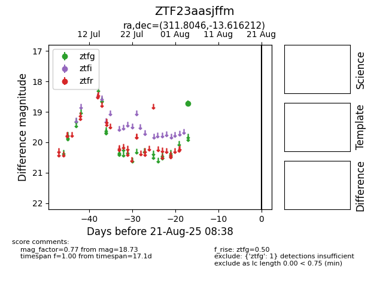

Target ZTF23aasjffm at 2025-08-21 08:38, see:
FINK: fink-portal.org/ZTF23aasjffm
Lasair: lasair-ztf.lsst.ac.uk/objects/ZTF23aasjffm
ALeRCE: alerce.online/object/ZTF23aasjffm
alt names
ZTF23aasjffm (ztf,alerce)
coordinates:
equatorial (ra, dec) = (311.8046,-13.61621)
galactic (l, b) = (33.2662,-31.73357)
photometry
last ztfg=18.73
1 ztfg detections
